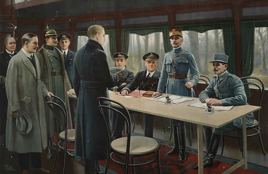

|  JUILLET
La
1st Canadian Heavy Battery est toujours à Nine Elms.
Les tirs quotidiens sont moyens, les bombardements hostiles se
poursuivent. Pour s'y soustraire, les canons changent de
position, mais jamais très loin de leurs cibles. Le 19 juillet
l'unité bouge en face de Roclincourt (au nord d'Arras)
et relève la 116th Battery. Chaque jour des salves sont
tirées, avec, le 26 juillet, un pic de plus de huit cents salves en appui à un raid
d'infanterie. Les ennemis répliquent et l'unité
essuie presque chaque jour des tirs de 5-9 ou de gaz. La cadence
augmente et un canonnier est blessé le dernier jour du mois. JUILLET
La
1st Canadian Heavy Battery est toujours à Nine Elms.
Les tirs quotidiens sont moyens, les bombardements hostiles se
poursuivent. Pour s'y soustraire, les canons changent de
position, mais jamais très loin de leurs cibles. Le 19 juillet
l'unité bouge en face de Roclincourt (au nord d'Arras)
et relève la 116th Battery. Chaque jour des salves sont
tirées, avec, le 26 juillet, un pic de plus de huit cents salves en appui à un raid
d'infanterie. Les ennemis répliquent et l'unité
essuie presque chaque jour des tirs de 5-9 ou de gaz. La cadence
augmente et un canonnier est blessé le dernier jour du mois.
AOÛT
les salves quotidiennes continuent à une moyenne de deux cents par
jour jusqu'au 20 août. Les tirs hostiles se poursuivent aussi,
évidemment.
LA BATAILLE
D'ARRAS
À partir du 21 août les
bombardements, envoyés et reçus, sont plus sévères. La
bataille d'Arras commence et l'artillerie, comme c'est son
rôle, vient en support à l'infanterie. Le 26 août, plus de
deux mille cent salves sont tirées en appui au Corps Canadien. Le lendemain,
près de huit cents salves. Et ainsi jusqu'au dernier
jour du mois. Toute la batterie bouge à Fampoux. Ce
jour-là elle ne tire aucune salve, mais les routes
et leur nouvelle position sont bombardées d'obus 4-2 et 5-9
ennemis.
SEPTEMBRE
la bataille d'Arras se poursuit de plus belle. Le 2 septembre,
après avoir reçu des bombes de gaz durant la nuit, l'unité de
Charles lance deux mille six cent soixante et dix salves (c'est
son record pour une journée de tirs durant cette guerre).
Certaines
de ces salves visent des avions qui volent bas au-dessus d'eux,
et cinq salves sont lancées contre un ballon. Les jours
suivants, les salves lancées sont en moyenne de cinq cents. L'unité subit des
nombreux tirs hostiles, dont des bombes de gaz chaque nuit. Le 4
septembre, deux canons de l'unité sont détruits et vingt-cinq
compagnons de Charles sont
hospitalisés à cause des gaz. Le lendemain, les communications
sont coupées et les avions ennemies sont très actives durant
le jour. Du 7 au 9 septembre, l'unité tire ses salves
exclusivement sur les ponts de Corbaham.
Le 10 septembre, l'unité est
relevée par le 136th Heavy Battery RGA (une
unité britannique) en fin d'après-midi et elle bouge vers une nouvelle position dans le Bois
de Boche sous le commandement canadien.
Dès le lendemain, les salves
reprennent à une bonne cadence des deux côtés. À partir du
15 septembre, les tirs diminuent peu à peu. Du 23 au 26
septembre c'est le silence complet des deux adversaires.
LA BATAILLE DU CANAL DU NORD
Le 27 septembre, à 5 heures du
matin, cinquante obus de 4-2 s'abattent sur l'unité de Charles.
Aucun dommage causé. Dans les minutes qui suivent, la 1st Canadian Heavy
Battery ouvre le feu en appui à l'attaque du Corps Canadien.
Plus de mille huit cents salves sont tirées sur Raillencourt, le Bois de Bourlon,
Arras et Cambrai. À minuit, la batterie bouge au nord du Bois
de Bourlon, sur du territoire gagné chèrement à l'ennemi.
Les tirs se poursuivent, dont près de mille salves sur Cambrai, et les
environs, chemins de fer, routes et ponts. Le 30 septembre plus
de mille cinq cents salves sont tirées sur Bantigny, Cuvilliers et les environs.
 OCTOBRE
la bataille se poursuit de
plus belle. La batterie tire plus de
mille salves durant plusieurs jours, dont mille huit cents le 9 octobre. Les
tirs ennemis se poursuivent aussi, et l'unité de Charles
est bombardée chaque jour, mais, la nuit, elle reçoit surtout des obus de gaz. La
batterie avance, peu à peu, sur du terrain gagné à l'ennemi.
On la
retrouve dans la forêt de Raismes le 24 octobre,
bombardant les environs de Valenciennes. OCTOBRE
la bataille se poursuit de
plus belle. La batterie tire plus de
mille salves durant plusieurs jours, dont mille huit cents le 9 octobre. Les
tirs ennemis se poursuivent aussi, et l'unité de Charles
est bombardée chaque jour, mais, la nuit, elle reçoit surtout des obus de gaz. La
batterie avance, peu à peu, sur du terrain gagné à l'ennemi.
On la
retrouve dans la forêt de Raismes le 24 octobre,
bombardant les environs de Valenciennes.
NOVEMBRE
le 1er du mois, la batterie tire plus de mille six cents salves. Les jours
suivants, les tirs sont de trois cents à huit cents salves par jour et visent
les environs et les routes de Valenciennes et de Mons. Le 9
novembre la batterie tire cent vingt salves et s'approche de Hainan.
Le lendemain, aucun tir. L'ennemi recule rapidement.
Tôt le 11 novembre, un message
arrive à l'unité: " Les hostilités vont cesser à 11
heures du matin. Les troupes doivent demeurer au point atteint
à ce moment précis, point qui doit être rapporté au Quartier
général du Corps d'armée canadien. Les précautions
défensives doivent être maintenues. Il ne doit y avoir aucun
contact d'aucune sorte avec l'ennemi. D'autres instructions
suivront. " L'infanterie canadienne entre à Mons.
Le 12 novembre, les hommes demeurent près
de leurs canons. Tout est silencieux. Le lendemain
l'unité bouge à Hainan où commence le nettoyage des canons,
wagons, harnais et autres équipements de toutes sortes. On fait
l'inventaire des magasins. Ces travaux se poursuivent jusqu'au
20 novembre, l'unité bouge alors vers Jemappes. Elle installe
ses bivouacs autour du Château Sport-Royal, et poursuit
l'entretien de l'équipement.
À partir du 27 novembre, par
petites étapes journalières, l'unité bouge, à pied, vers Namur, puis vers l'Allemagne. Pour
les Alliés, c'est le début de l'occupation, tel que stipulé dans le
traité d'Armistice.
DÉCEMBRE Entrecoupé de jours de repos, l'unité d'artillerie de Charles
poursuit sa marche vers Bonn, Allemagne (Namur
est à 200 kms de Bonn). Elle
y arrive le 16 décembre. Elle
s'installe et exécute chaque jour les corvées usuelles. Les
hommes de l'unité passent un très joyeux Noël.
Les Canadiens s'étaient préparés à des attaques de
guérilla, voire à de nouveaux assauts de l'armée allemande, mais
aucun des deux camps ne souhaite poursuivre la guerre. Leur tâche
d'occupation consiste à surveiller les ponts et les déplacements
des gens, et de garantir la distribution de
nourriture et d'autres marchandises.

Traversée du Rhin par le Corps canadien
Collection d'archives George-Metcalf
LES
CENT JOURS DU CANADA
En raison du rôle de premier plan joué
par le Corps d'armée canadien dans la poussée victorieuse jusqu'à
Mons, on en est venu à baptiser la période du 8 août au 11 novembre
1918 "les cent jours du Canada".
Les
attaques tout le long de la
ligne de défense allemande sont appuyées par les bombardements très intenses
de l'artillerie. Non seulement
les Canadiens réussissent à traverser le canal du Nord et à ouvrir une brèche, mais ils s'emparent aussi du
bois de Bourlon, ce qui est tout un exploit. Les troupes remportent
d'autres brillantes victoires ailleurs sur le front britannique; la
ligne Hindenburg est bel et bien brisée.
De durs combats s'ensuivent et mènent à la capture de Cambrai. Le
11 octobre, le Corps canadien atteint le canal de
la Sensée. C'est la dernière des opérations regroupées du Corps d'armée
canadien, bien que des missions continuent d'être confiées à des
divisions particulières pendant que le Corps d'armée s'efforce de libérer
Valenciennes avant d'atteindre Mons le jour
de la signature de l'Armistice.

Armistice,
novembre 1918
Des commandants et des politiciens de haut rang allemands et alliés
signent l'armistice mettant fin à la guerre dans une voiture de chemin
de fer près de Compiègne, en France, tôt le matin du 11 novembre
1918. Le maréchal Foch, commandant suprême
des Alliés, accepte la reddition des Allemands.
The Signing of the Armistice
Estampe par Pillard
Collection d'art militaire Beaverbrook

|
|